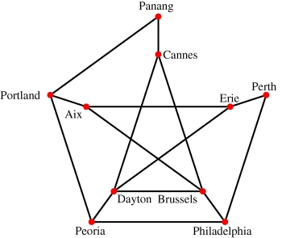
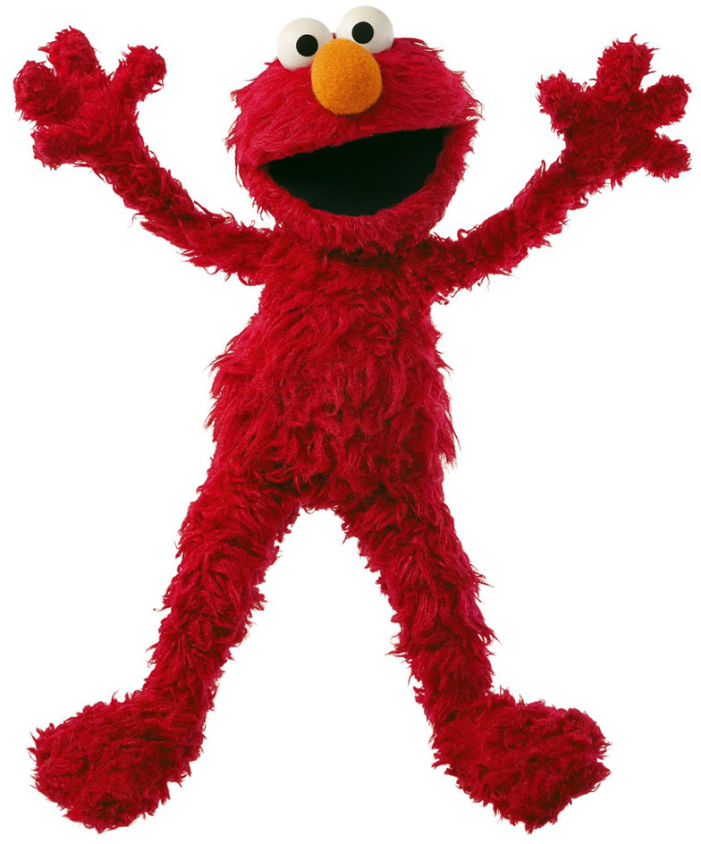
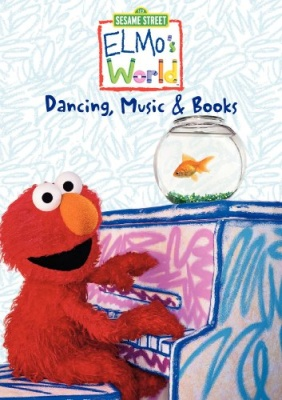
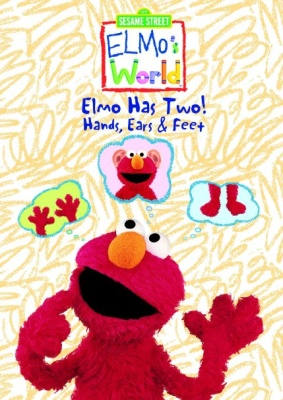
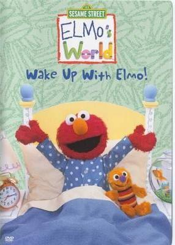
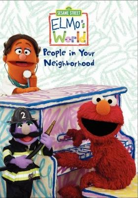
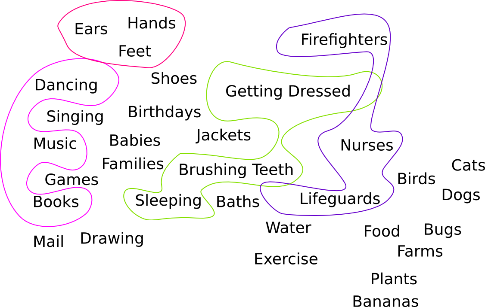
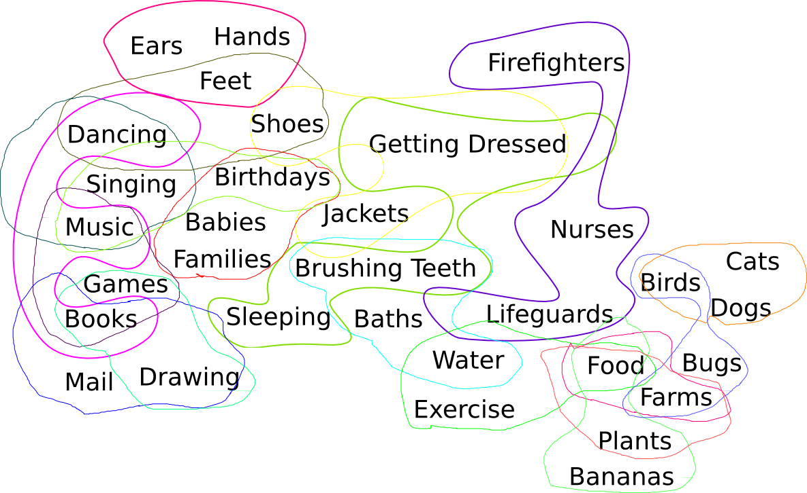
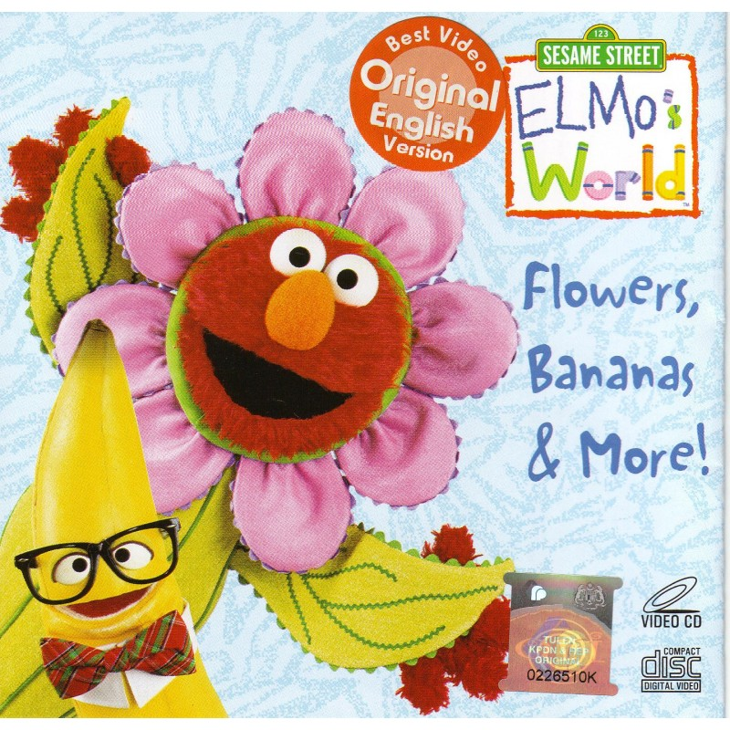

I wrote this talk for !!Con 2016 and gave it on 16 May 2016. It is based on an earlier blog post on the same subject.
You could just look at the talk slides but I think without the commentary they will be unintelligible.
Mirabai Knight produced a transcript of what I actually said in the talk, but I think you will probably prefer this version.
My kids graciously consented to listen to me give a practice version of the talk the night before !!Con, and the version I gave at the conference is much better than it would have been otherwise. Thanks, kids.
There's this large class of problems called “NP”. A problem is NP if, when someone hands you what they claim is a solution to the problem, you can efficiently decide that they are telling you the truth and it is actually a solution.
Lots of problems are in this class. A sort of silly example is sorting. You have a list, you want to sort it, and someone comes up and hands you what they claim is a sorted version of the list. There are a couple of ways to see if they are telling the truth. You can compare the element of their list to make sure they match the elements of your list, then check to see if the elements of their list are in ascending order. If both of those are true, then their list is a sorted version of yours. And there's an ever easier way to check: sorting is easy, so just sort you own list and then check to see if the result matches what the other person gave you.
Well, that was a little silly, but it makes the point that if a problem is easy to solve, then it's easy to check to see if proposed solutions are correct, because you just solve the problem, and then look to see if it matches the proposal.
But not every example is so silly, as we will shortly see.
(What does “NP” stand for, anyway? Something like Nagorno-Karabakh Papadapoulos time or some such nonsense.)
Some problems have solutions that are easy to verify even though they are very hard to solve. For instance, everyone's least favorite problem, packing a moving van. You have all your belongings out on the sidewalk, and an empty van, and the question: can I get all this stuff in the van? And you might spend two hours trying to get it all in and then the van is full and there are seven things still on the sidewalk. But for all you know, if you hadn't made a mistake two hours ago, and put that one item in sideways instead of longways, it all might have gone in. So it can be really hard to figure out how to pack the van, or even if there is a way to pack the van.
But if someone comes to you, puts the stuff into the van and says “Look, it all went in!” then it's easy to check if they're telling the truth: just try to shut the door! If it shuts, the van is packed! So this problem is hard to solve, but still NP.
Examples of this type abound. Consider crossword puzzles. It might take someone hours to figure out all the words, but if you hand them the crossword puzzle with the words already filled in, all they have to do is check to see if the words match the clues.
Or consider conference scheduling, which I skipped over because !!Con has only one track and one room and so the problem is trivial in that case. But in general there might be many tracks, many rooms, and you can't schedule two talks in the same room at overlapping times, or one speaker in different rooms at overlapping times, and so on.
Or to consider a very general example, doing your homework. It might take you hours to solve all the problems, but the grader can check in seconds whether you got the right answers.
In 1971 a mathematician named Cook discovered that among these many NP problems, there is one super special one, called SAT. “SAT” is short for “satisfiability”. It is the problem where someone gives you a formula, with variables joined by ands, ors, and nots, and asks if there's a way to assign true and false values to the variables to make the whole formula true.
It's easy to see this is in NP, because if someon comes and tells you “Oh, you can make the formula true if you make this variable true, that one true, this one false, that one true,” and so on, it's easy to check if that is a solution: just evaluate the formula and see if they are correct.
But at least in principle it seems like it could be hard to tell what values to give to the variables, or if there even is a way. You could try every possible assignment, but that would take a long time if there were a lot of them—exponentially long. And in fact nobody knows a good algorithm to solve this problem that always works and doesn't take too long.
But here's what's special about SAT. If you did have a good algorithm for solving it, you could take you favorite NP problem, and NP problem at all, and convert the efficient SAT algorithm mechanically into an efficient algorithm for solving your other NP problem. For this reason we say that SAT is “NP-complete”, because a solution for it would completely solve everything in NP.
We sometimes say this makes SAT that “hardest problem in NP”. Because while it's possible that you might have a good way to solve your favorite NP problem, but still not know how to solve SAT, it is impossible for the reverse to be true. So SAT is at least as hard as your favorite NP problem.
(This was independently discovered around the same time by Leonid Levin.)
The other thing that's interesting about this “NP-complete” concept is that SAT is not the only problem that is special in this way. The following year a mathematician named Richard Karp discovered that there are a whole bunch of them. He gave a list of 21 NP-complete problems.
One is SAT, one is “Hamiltonian Cycle”, which is the question of whether you can find a route that visits each city exactly once and returns to its starting point, and 19 others.

A solution to any of these 21 NP-complete problems would solve every other problem in NP, including the other 20 NP-complete problems. Most of these are well-studied problems, but still, nobody knows a good algorithm for any of them, because if they did, they would be able to turn it into good algorithms for all the others.
Since Karp, people have discovered hundreds of these NP-complete problems, a huge family, including:
Despite many years’ work on all these different problems nobody knows a good solution for any of them. There are algorithms that work in special cases, algorithms that run quickly but sometimes return the wrong answer, algorithms always return the right answer but sometimes take a long while to run, but nothing that works every time without sometimes taking a long time. Every known method for every one of these problems goes wrong in some way or another.

The guy in this picture is Elmo. He is a furry red monster, age around 3 years, and well-known because he has dominated Sesame Street since about 1998. Toddlers love him.
Here for example is my own toddler, Katara, who is now 11 years old. Ms. Karara here was a very demanding kid. Some kids, you can go off and leave them by alone for a while, and they will be content, amuse themselves, maybe put their feet in their mouths or whatever kids that old like to do. Not Katara! If you left her alone for thirty seconds she would make an exceedingly unpleasant noise until you came back. I, luckily, had a day job, so my wife was stuck at home listening to that noise. She would take care of Katara all morning, and then it would be time to make lunch, and she would have to leave the room to make lunch.
So she would prop up Katara in this purple device called an Exer-Saucer, in which she could revolve but not go anywhere. And she ould park Katara in front of Sesame Street to watch Elmo’s World, which lasts 18 minutes. And during that 18 minutes, while Katara was distracted, she could prepare and eat her lunch, without having to hear that noise.
We learned that other parents refer to this device as a “Neglecto-Saucer”.
Katara was obsessed with Elmo, and we discovered that Elmo is everywhere. We were going up the stairs and Katara gasped and pointed and said “IT’S ELMO!!” and we looked and this is what we saw:
What is Elmo’s World about? It's 18 minutes long and each episode is about some topic of interest to Elmo’s target audience, such as:
| Babies | Drawing | Hands |
| Bananas | Ears | Jackets |
| Baths | Exercise | Lifeguards |
| Bicycles | Families | |
| Birds | Farms | Music |
| Birthdays | Feet | Nurses |
| Books | Firefighters | Plants |
| Brushing Teeth | Food | Singing |
| Bugs | Games | Sleeping |
| Cats | Getting Dressed | Water |
| Dancing | Hair | Weather |
| Dogs |
There are many others; this is only a typical sample.
You don't have to catch these live. They were also distributed on videocasette, and later, on DVD, so that they could be delivered to Katara on demand. Each video release contained three episodes, so totaled about an hour. And as you can see on this slide, the video releases typically had some kind of theme, three episodes that were related somehow.
So for example, Dancing, Music, & Books:

Or Hands, Ears, & Feet:

Sometimes the titles were a little more subtle, but there was always a theme. This one is called Wake Up with Elmo, and it collects the three segments on sleeping, getting dressed, and brushing your teeth:

This one, titled People in Your Neighborhood, is about firefighters, lifeguards, and nurses:

Here are those Elmo’s World topics I listed before. Some groups of three, like are considered acceptably related to qualify for a video release. I've circled the four related groups we saw on the previous slide.

On the other hand, some possible selections of three are just too miscellaneous to be released together, say “Shoes, Bugs, & Drawing”. That would be a no-no.
So now the question: Suppose you are designing the video releases. Some groups of three are acceptable, and some are not. How do you pick which groups of three to actually package together into a video release? You can't do every acceptable group of three, because many of them overlap, and you mustn’t put the same segment on two different videos, or people will complain that they paid for two videos but only got five different segments.

For example, if you decide to release “Getting Dressed” on the same video with “Brushing Teeth” and “Sleeping”—as they did—that forecloses the possibility of releasing it along with “Shoes” and “Jackets”. You have to find some other theme or themes for the videos that include “Shoes” and “Jackets”. Maybe you can put “Shoes” with “Feet” and “Dancing”. But if you do that, you can’t put “Dancing” with “Music” and “Books”, and you can’t put “Feet” with “Hands” and “Ears”. A choice in part part of the picture might have far-reaching effects on what you can do in a different part of the picture. And of course you want to put every segment onto some video.
Here we are at my favorite NP-complete problem. It's one of the original 21 from Karp’s 1972 paper, called the EXACT COVER BY 3-SETS problem. I guess abbreviating this to “XC3” was not considered to be obscure enough, because computer science abbreviates it to “X3C”.
Normally, at this point I would explain what the X3C problem is, except that I just did; that was it. One of the canonical, original NP-complete problems from Karp’s 1972 paper is the problem of deciding which of the thematically related groups of three Elmo's World segments should be packaged into video releases, so that every segment is in exactly one release.
Since the problem is NP-complete, nobody knows a good algorithm to solve it in general, not in 1972, or in 1998 when Elmo’s World began, or in 2007 when Katara was watching the show, and not today.
So how did the Elmo’s World people solve this problem? They could not.

The topic of this video is flowers, bananas, and … hair.
Thank you very much.